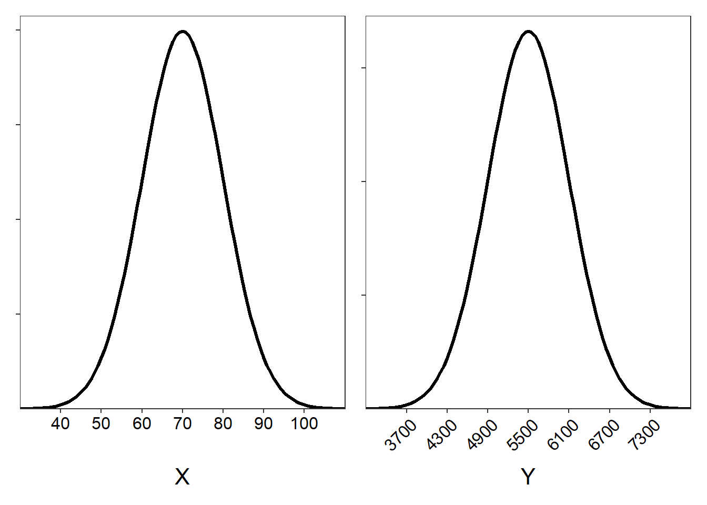

Normal Distribution Characteristics I
- Using
snorm()
- The whole distributions shifts to the right.
- The distribution becomes wider (more dispersed).
- Below
- \(\mu\)=75, \(\sigma\)=10, show the hand-drawn distribution.
- \(\mu\)=5500, \(\sigma\)=600, show the hand-drawn distribution.

Hand Calculations I
For X~N(75,10)
- 97.5% [95% are between 55 and 95, and an additional 2.5% is less than 55.]
- 0.15% [The percentage that is more than 3 SD greater than the mean.]
- 68% [Within 1 SD either direction.]
- 81.5% [2.5% is less than 55 and 16% is greater than 85, which leaves 100-2.5-16=81.5 between 55 and 85.]
- Less than 55. [More than 2 SD below the mean.]
- Between X=55 and 95. [Between 2 SD in either direction]
- Greater than X=95. [More than 2 SD above the mean.]
Note:
-
Always stop to ask if it makes sense to record the variable on the individual. There is an urge to call the individual an “ant”, but does it make sense to record the “number of ants” on an ant?
-
Another hint for identifying the individual is to look at the “forward” questions. The forward questions will always ask you to computer the percentage of individuals.
Carpenter Ants
Top questions
- A nest
- Number of Carpenter Ants in a nest
- Discrete quantitative
- \(\mu\)=1400
- \(\sigma\)=300
Bottom questions
- forward, right-of.
- reverse, right-of.
- reverse, left-of.
- forward, between.
- forward, left-of.
- reverse, right-of.
- reverse, between.